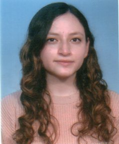

HOJA DE VIDA
Datos personales
| Nombre Completo: |
Marjorie Juleysi Cedeño Tuquerez |
| Cédula: |
1752231207 |
| Nacionalidad: |
Ecuatoriana |
| Estado civil: |
Soltera |
| Teléfono domicilio: |
022626228 |
| Teléfono celular: |
0959792882 |
| Correo electrónico: |
mjcedeno5@espe.edu.ec |
| Dirección actual: |
CDLA. Reino de Quito |
| Calles: |
Joaquín Hervas Oe11-60 e Inti Raimi |
|

|
Perfil Profesional
Estudiante de ingenieria de software con conocimientos en programacion en lenguajes como: C++, Python, Java y C#, entendida en sistemas de bases de datos y computación paralela. Responsable, puntual, organizada, respetuosa, proactiva y con interés en desarrollar soluciones eficientes mediante tecnologías modernas.
Habilidades:
- Programación en C++, Python, Java y C#
- Uso de herramientas como MATLAB, excel y PowerDesigner
- Trabajo en equipo
- Comunicación
Idiomas:
- Español (Nativo)
- Ingles (Básico)